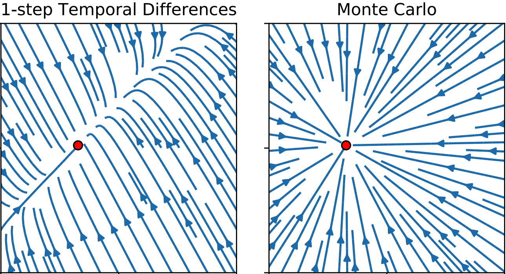

Fun RL Paper Collection
|
After one year into RL, I still occasionally feel "Why something has not been studied in RL? It is so intuitive". Usually, it turns out that prior works are there, just not easy to find. They study interesting questions (that a newcomer would ask) and are fun to read. But they are often omitted in various online RL tutorials. So I create this page to collect these RL papers I have read. Hope one of them can give you inspirations :) |
 
|
Investigating Human Priors for Playing Video Games
Rachit Dubey, Pulkit Agrawal, Deepak Pathak, Thomas L. Griffiths, Alexei A. Efros ICML 2018 This game placed us in the shoes of reinforcement learning (RL) agents that start off without the immense prior knowledge that humans possess. |
|
 |
On The Effect of Auxiliary Tasks on Representation Dynamics
Clare Lyle, Mark Rowland, Georg Ostrovski, Will Dabney AISTATS 2021 Even in an environment with no reward signal at all, an agent performing TD learning still picks up information about the transition structure of the environment within its value function. |